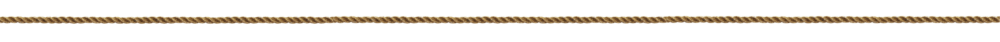
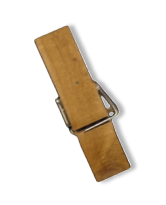

F. A. Q. - 15 вопросов аудитору



Назар смотрел это видео со Счетиком через небольшое устройство с экраном, укрывшись в заброшенном архиве Счетной палаты. Юноша нашел запись случайно: среди документов лежала непримечательная флешка с наклеенным кусочком бумаги, где было написано «Инт. Дмитрий Зайцев». Сначала он не придал ей особо значения, но любопытство взяло верх.
— Судя по всему, это видео сделали для тех, кто ничего не знает об аудите. Он рассказывает так легко, хотя все это так сложно, — задумчиво произнес Назар, — думаю, Счетик, когда я помогу миру, то обязательно покажу это всем людям.
Ворон одобрительно гаркнул в ответ. Парень положил флешку в сумку и отправился дальше. Впереди предстояло еще много работы.